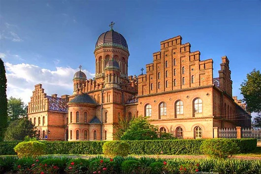
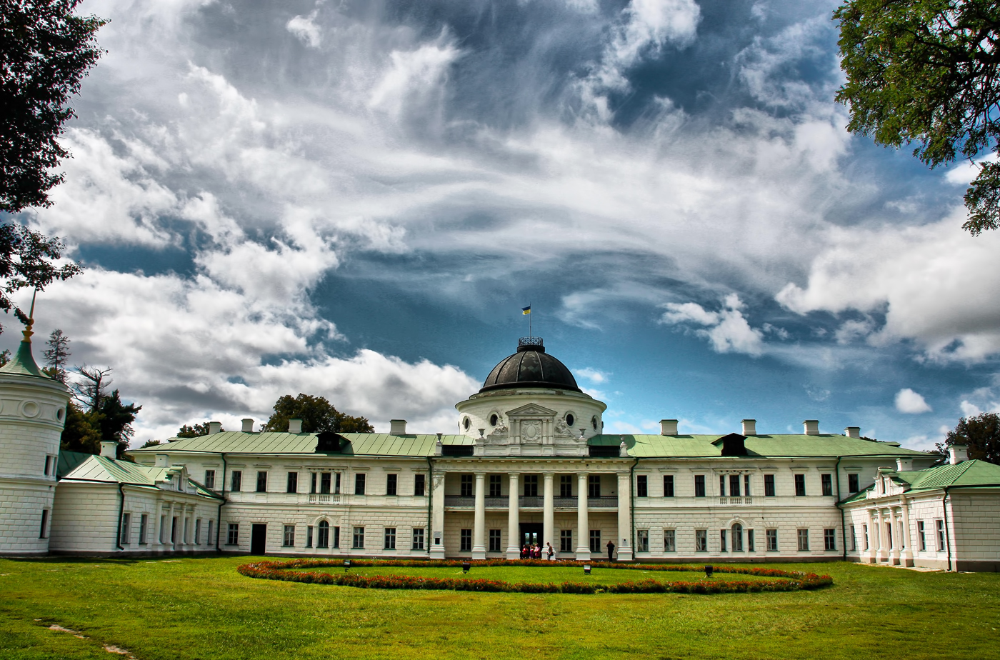
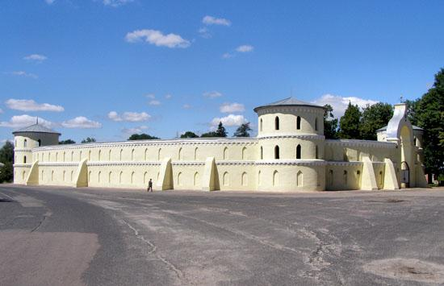
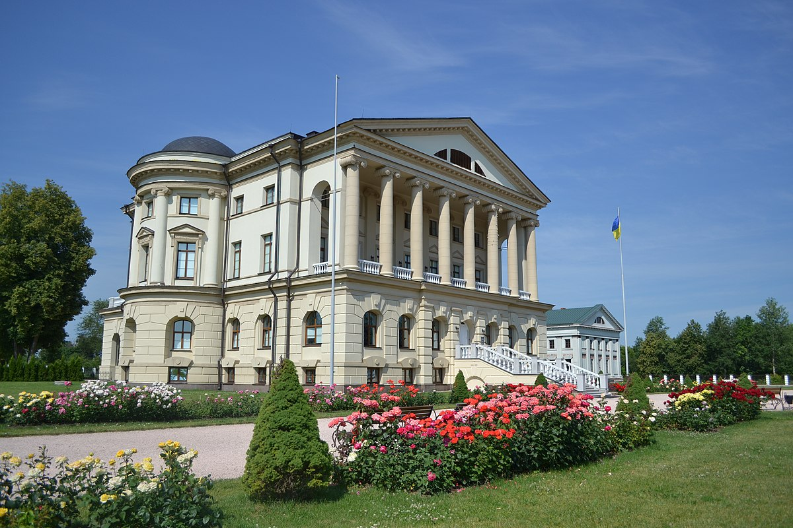
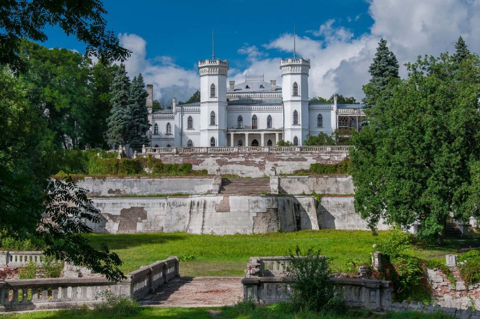

Вишукані палаци та маєтки України
Резиденція митрополитів Буковини і Далмації
Це архітектурний комплекс — перлина Чернівців і вершина творчості відомого чеського архітектора і вченого Йозефа Главки. Він спроектував нетрадиційний комплекс споруд у дусі еклектики з переважанням елементів візантійського та романського стилів.
Побудований на місці старого єпископського будинку в 1864-1882 рр. Сьогодні тут розташований Чернівецький національний університет імені Юрія Федьковича. 28 червня 2011 було прийнято офіційне рішення про внесення Резиденції до списку Всесвітньої
культурної спадщини ЮНЕСКО.

Палац Качанівка
Знаходиться в 170 кілометрах від Києва. Це єдиний в Україні маєток, який уцілів у комплексі, незважаючи на війни і революції. Палац перебудований на замовлення родини меценатів Тарновських. Він знаходиться на схилі, який із двох боків омивають
мальовничі ставки. Тут Михайло Глінка писав оперу "Руслан і Людмила", а Микола Гоголь вперше на публіці прочитав повість "Тарас Бульба".

Садиба Голіциних
Знаходиться в Тростянці Сумської області. Головною прикрасою і пам'яткою є Круглий двір Тростянця. Зовні Круглий двір – це висока стіна з чотирма баштами і в'їзними воротами. Всередині він має відкритий простір, навколо якого розташовані трибуни.
Садибу побудували в 1749 році пани Надаржинські, тодішні власники міста. Тут проводилися циркові шоу і кінні спектаклі.

Палац Розумовських в Батурині
Гетьманський палац – велична споруда, яка будувалася у 1799-1803 рр. за проектом видатного шотландського архітектора Чарльза Камерона. Правда, в ті роки Розумовський вже гетьманом не був, тому палац будувався як графська резиденція. Палац збудували
в стилі палладианізма. Це не єдина подібна споруда в Україні. В основі цього стилю лежить суворе дотримання симетрії, облік і запозичення принципів класичної храмової архітектури античного періоду.

Палац Кеніга
У Шарівці Харківської області з'явився в початку 19 століття як маєток Ольховських. Свого розквіту він досяг в кінці 19 і початку 20 століть, перебуваючи у власності чергового цукрового магната – Леопольда Кеніга. Кеніг значно розширив будівлю
садиби, перетворивши її на справжній палац з баштами і парадними сходами. Сходи трьома терасами спускалися до фонтану і басейну з містком. Велика увага також приділялася парку, оранжереям для тропічних рослин і другорядним приміщенням для
робітників. Зараз цей архітектурний комплекс знаходиться в стані напівруїни.

Маріїнський палац
У Києві збудовано в 1744 році на замовлення імператриці Єлизавети за проектом архітектора Бартоломео Растреллі. Маріїнський палац – яскравий приклад стилю бароко: виразні об'єми, багата пластика фасадів. Під керівництвом учня Растреллі – російського
зодчого Івана Мічуріна будівництво палацу остаточно було завершено у 1752 році. Впродовж своєї історії Маріїнський палац неодноразово реконструювався. До недавнього часу історична споруда Маріїнського палацу представляла Україну як державна
резиденція (Президентський палац). Тут проводилися офіційні прийоми та саміти, церемонії вручення нагород, вірчих грамот Послами іноземних держав, зустрічі іноземних делегацій на вищому рівні. В даний час палац на реставрації.